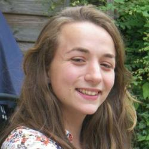

Ed has been a researcher specializing in biodiversity conservation for over 10 years...
Find out more »

Sarah is an ecologist with a focus on sustainable agriculture and its impact...
Find out more »